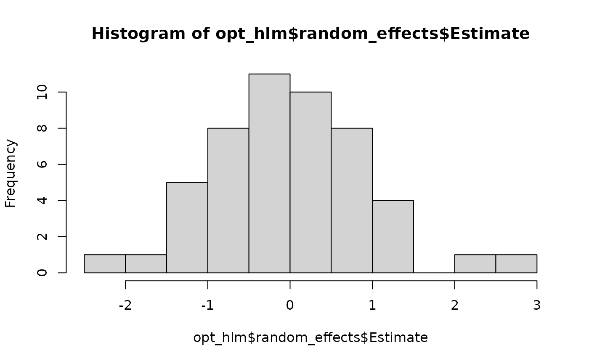
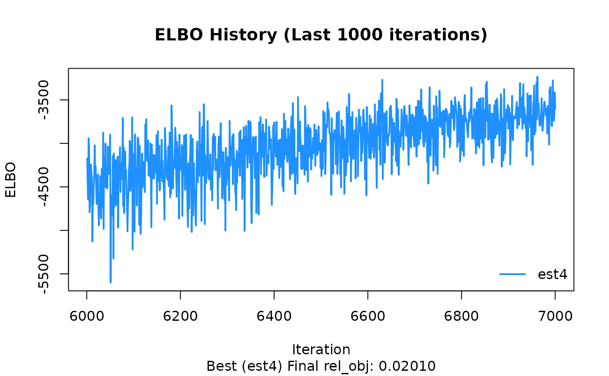

このページでは、BayesRTMB を実際に使い始めるための最短ルートを順を追って説明します。
最初に単純な二項モデルで rtmb_code() と
rtmb_model() の基本的な流れを確認し、
次に回帰モデルで各ブロックの役割を見て、最後に階層モデルで random effect
と Laplace 近似の使い方を確認します。
このページで扱う流れ
BayesRTMB の基本的な使い方は、ほぼ次の 3 段階にまとまります。
- データを用意する
rtmb_code()でモデルを書くrtmb_model()でモデルオブジェクトを作り、optimize()・sample()・variational()を使う
Binomial model
最初に、もっとも単純な二項モデルを例に、rtmb_code() と
rtmb_model() の基本的な流れを確認します。 ここでは、10
回の試行のうち成功が 6 回観測された状況を扱います。
## Loading required package: RTMB
Trial <- 10
Y <- 6
data_list <- list(Trial = Trial, Y = Y)
model_code <- rtmb_code(
parameters={
theta=Dim(lower=0,upper=1)
},
model={
Y~binomial(Trial,theta)
theta ~ beta(2,2)
}
)rtmb_model
rtmb_model()
は、データとモデル定義を受け取って推定用のモデルオブジェクトを作る関数です。
最低限必要なのは、観測データをまとめた data
と、rtmb_code() で作成した code です。
この段階ではまだ推定は行われません。
ここで作られたモデルオブジェクトに対して、以後
optimize()、sample()、variational()
を実行していきます。
mdl <- rtmb_model(data = data_list, code = model_code)## Pre-checking model code...
## Checking RTMB setup...MAP
optimize() は MAP 推定を行います。
事後分布の最頻値に対応する点推定を求めたいときに使います。
まずは追加オプションなしで実行し、推定値と区間推定の出力を確認します。
fit_MAP <- mdl$optimize()## Starting optimization...
##
## Optimization converged. Final objective: 1.01
fit_MAP##
## Call:
## MAP Estimation via RTMB
##
## Negative Log-Posterior: 1.01
## Approx. Log Marginal Likelihood (Laplace): -0.63
##
## Point Estimates and 95% Wald CI:
## variable Estimate Std. Error Lower 95% Upper 95%
## theta 0.58309 0.14234 0.30743 0.81504se_sampling
se_sampling = TRUE
を指定すると、推定結果の不確実性を使って、シミュレーションベースで標準誤差と
95% 区間を計算します。 この方法を使うと、transform
で作成した派生量や generate
で作成した量についても区間推定を出しやすくなります。
派生量の信頼区間まで含めて見たいときに便利です。
fit_MAP <- mdl$optimize(se_sampling = TRUE)## Starting optimization...
##
## Optimization converged. Final objective: 1.01
## Using simulation-based error propagation (1000 samples)...
fit_MAP##
## Call:
## MAP Estimation via RTMB
##
## Negative Log-Posterior: 1.01
## Approx. Log Marginal Likelihood (Laplace): -0.63
##
## Point Estimates and 95% Wald CI:
## variable Estimate Std. Error Lower 95% Upper 95%
## theta 0.58309 0.13505 0.30462 0.81333MCMC
sample() は NUTS を用いた MCMC サンプリングを行います。
既定値は sampling = 1000, warmup = 1000,
chains = 4, thin = 1 です。
fit_mcmc <- mdl$sample(sampling = 1000,
warmup = 1000,
chains = 4,
thin = 1
)
fit_mcmc## variable mean sd map q2.5 q97.5 ess_bulk ess_tail rhat
## lp -2.96 0.74 -2.48 -5.00 -2.42 1846 2152 1.00
## theta 0.58 0.13 0.58 0.31 0.81 1170 1901 1.00bridgesampling
bridgesampling() を使うと、MCMC
サンプルにもとづいて対数周辺尤度を推定できます。
出力には推定誤差も付くため、誤差が大きい場合はサンプル数を増やして精度を上げます。
一度計算した結果は fit_mcmc$log_ml
に保存されるため、同じオブジェクトで後から再利用できます。
fit_mcmc$bridgesampling()## Bridge Sampling Converged: LogML = -2.102 (Error = 0.0012, ESS = 1354.1)## [1] -2.101626
## attr(,"error")
## [1] 0.001203673
## attr(,"ess")
## [1] 1354.054
fit_mcmc$log_ml## [1] -2.101626
## attr(,"error")
## [1] 0.001203673
## attr(,"ess")
## [1] 1354.054
Regression model
次に、回帰分析を例に rtmb_code()
の各ブロックの役割を確認します。 この例では、
-
setupでデータの次元を整理し、 -
parametersで推定するパラメータを宣言し、 -
transformで平均構造muを定義し、 -
modelで尤度と事前分布を書く
という流れになっています。
ここでは、切片と回帰係数に正規分布、残差標準偏差に指数分布を事前分布として与えています。
set.seed(123)
alpha <- 5
beta <- c(1)
sigma <- 2
N <- 50
X <- matrix(seq(1, 5, length.out = N), ncol = 1)
Y <- alpha + X[, 1] * beta + rnorm(N, 0, sigma)
data_reg <- list(Y = Y, X = X)
code_reg <- rtmb_code(
setup = {
N <- length(Y)
P <- ncol(X)
},
parameters = {
alpha = Dim()
beta = Dim(P)
sigma = Dim(lower=0)
},
transform = {
mu = alpha + as.vector(X %*% beta)
},
model = {
Y ~ normal(mu, sigma)
alpha ~ normal(0, 100)
beta ~ normal(0, 10)
sigma ~ exponential(1/10)
}
)rtmb_model
rtmb_model() では init
を指定して初期値を与えることができます。
初期値を明示しておくと、複雑なモデルで推定が安定しやすくなることがあります。
一部のパラメータだけ指定した場合は、残りを自動で補うこともできます。
mdl_reg <- rtmb_model(data_reg, code_reg, init = list(alpha = 0, beta = 0))## Pre-checking model code...
## Checking RTMB setup...MAP
par_names や view
をモデル作成時に指定しておくと、要約結果の表示がわかりやすくなります。
par_names
はパラメータの表示名を付けるために使い、view は
summary()
などで優先的に上に表示したい変数を指定するために使います。
この例では未指定ですが、階層モデルの例で実際の使い方を示します。
opt_reg <- mdl_reg$optimize(se_sampling=TRUE)## Starting optimization...
##
## Optimization converged. Final objective: 112.47
## Using simulation-based error propagation (1000 samples)...
opt_reg$summary()##
## Call:
## MAP Estimation via RTMB
##
## Negative Log-Posterior: 112.47
## Approx. Log Marginal Likelihood (Laplace): -114.89
##
## Point Estimates and 95% Wald CI:
## variable Estimate Std. Error Lower 95% Upper 95%
## alpha 5.16974 0.70841 3.83342 6.59727
## beta 0.96635 0.21849 0.53493 1.39906
## sigma 1.82755 0.18022 1.50302 2.20726
## mu[1] 6.13609 0.51081 5.18426 7.17728
## mu[2] 6.21498 0.49545 5.29736 7.23522
## mu[3] 6.29386 0.48027 5.40404 7.27574
## mu[4] 6.37275 0.46527 5.50768 7.33337
## mu[5] 6.45163 0.45049 5.61612 7.38735
## mu[6] 6.53052 0.43592 5.71593 7.42122
## mu[7] 6.60941 0.42162 5.81563 7.46393MCMC
回帰モデルでも sample()
を使えば事後分布全体を評価できます。 MAP では点推定が中心ですが、MCMC
では分布の形、不確実性、パラメータ間のばらつきまで確認できます。
mcmc_reg <- mdl_reg$sample()
mcmc_reg## variable mean sd map q2.5 q97.5 ess_bulk ess_tail rhat
## lp -113.36 1.19 -112.38 -116.46 -111.98 1157 917 1.00
## alpha 5.21 0.73 5.16 3.80 6.63 691 889 1.00
## beta 0.95 0.23 0.89 0.50 1.39 696 589 1.00
## sigma 1.91 0.19 1.90 1.58 2.32 833 1665 1.01
## mu[1] 6.16 0.53 6.17 5.14 7.21 743 917 1.00
## mu[2] 6.24 0.51 6.26 5.25 7.25 752 926 1.00
## mu[3] 6.32 0.49 6.33 5.35 7.30 763 928 1.00
## mu[4] 6.39 0.48 6.41 5.46 7.34 776 929 1.00
## mu[5] 6.47 0.46 6.48 5.58 7.39 789 995 1.00
## mu[6] 6.55 0.45 6.56 5.68 7.43 805 1013 1.00bayes_factor
bayes_factor()
を使うと、推定したモデルと帰無モデルの周辺尤度を比較し、ベイズファクターを計算できます。
null_model = "beta" のように指定すると、その係数を 0
に固定した帰無モデルを内部で作成して比較します。
係数の有無をベイズ的に評価したいときに便利です。
bf_result <- mcmc_reg$bayes_factor(null_model = "beta")
bf_result## Bayes Factor (BF12) : 59.1088
## Log Bayes Factor : 4.0794 (Approx. Error = 0.0055)
## Interpretation : Strong evidence for Model 1Hierarchical model
最後に、階層モデルの例として ChickWeight
データを用います。
ここでは個体ごとのランダム効果を導入し、個体差を表現します。
階層モデルでは、推定の安定性を高めるために、説明変数の中心化や適切な初期値の指定が有効になることがあります。
Y <- ChickWeight$weight
X <- model.matrix(weight ~ Time + Diet, data = ChickWeight)[,-1]
ID <- ChickWeight$Chick
data_hlm <- list(Y=Y,X=X,ID=ID)
code_hlm <- rtmb_code(
setup = {
N <- length(Y)
G <- length(unique(ID))
P <- ncol(X)
},
parameters = {
alpha = Dim()
beta = Dim(P)
tau = Dim(lower=0)
sigma = Dim(lower=0)
r = Dim(G, random = TRUE)
},
transform = {
mu = alpha + X %*% beta + r[ID] * tau
},
model = {
Y ~ normal(mu, sigma)
r ~ normal(0, 1)
alpha ~ normal(0, 100)
beta ~ normal(0, 10)
tau ~ exponential(1/10)
sigma ~ exponential(1/10)
}
)rtmb_model
par_names や view
をモデル作成時に指定しておくと、要約結果の表示がわかりやすくなります。par_names
はパラメータの表示名を付けるために使い、view は
summary()
などで優先的に上に表示したい変数を指定するために使います。
この例では par_names
を使って回帰係数に変数名を付け、view を使って
summary()
でtauをsigmaより優先表示するように指定しています。
出力の可読性を高めたい場合は、この 2
つをあらかじめ設定しておくと便利です。
mdl_hlm <-
rtmb_model(
data = data_hlm,
code = code_hlm,
par_names = list(beta = c("Time","Diet2","Diet3","Diet4")),
view = c("alpha", "beta", "tau", "sigma")
)## Pre-checking model code...
## Checking RTMB setup...MAP Laplace approximation
optimize(laplace = TRUE) とすると、ランダム効果を
Laplace 近似で積分消去しながら固定効果を推定できます。
階層モデルでは計算をかなり軽くできることが多く、まず MAP
で全体像を確認したいときに有用です。
また、num_estimate
を大きくすると複数回の最適化を行い、その中で目的関数が最も良かった結果を採用できます。
ランダム効果の推定結果は random_effects
に別途保存されます。
opt_hlm <- mdl_hlm$optimize(num_estimate = 4)## Starting optimization...
## Optimization run 1/4...Optimization run 2/4...Optimization run 3/4...Optimization run 4/4...
##
## Optimization Diagnostics per estimate:
## est1: Objective = 2925.70, Code = 0 (Converged)
## est2: Objective = 2836.45, Code = 0 (Converged)
## est3: Objective = 2925.70, Code = 0 (Converged)
## est4: Objective = 2836.45, Code = 0 (Converged) <-- BEST
opt_hlm##
## Call:
## MAP Estimation via RTMB
##
## Negative Log-Posterior: 2836.45
## Approx. Log Marginal Likelihood (Laplace): -2830.53
## Note: Random effects are stored in $random_effects
##
## Point Estimates and 95% Wald CI:
## variable Estimate Std. Error Lower 95% Upper 95%
## alpha 21.13542 4.80045 11.72671 30.54413
## beta[Time] 8.72261 0.17479 8.38002 9.06520
## beta[Diet2] 3.94823 6.71961 -9.22198 17.11843
## beta[Diet3] 16.77738 6.90118 3.25132 30.30345
## beta[Diet4] 12.65242 6.83185 -0.73775 26.04260
## tau 22.77557 2.61452 18.18679 28.52216
## sigma 28.14964 0.86276 26.50846 29.89242
## mu[1,1] 16.97452 9.81426 -2.26107 36.21011
## mu[2,1] 34.41974 9.75568 15.29897 53.54051
## mu[3,1] 51.86496 9.70933 32.83502 70.89491
opt_hlm$random_effects$Estimate |> hist()
MCMC
階層モデルでも sample() によってMCMC推定を行えます。
チェイン数が多い場合やモデルが重い場合は、parallel = TRUE
を指定して並列計算することもできます。1回目は並列化のためのワーカー立ち上げに時間がかかりますが、2回目以降は高速に立ち上がります(下ではFALSEにしています)。
収束診断を確認しながら、必要なら warmup や
sampling を増やしていきます。
mcmc_hlm <- mdl_hlm$sample(sampling = 2000,
warmup = 2000,
parallel = FALSE)
mcmc_hlm$summary()## variable mean sd map q2.5 q97.5 ess_bulk ess_tail rhat
## lp -2849.30 7.37 -2848.25 -2864.70 -2835.55 806 2397 1.00
## alpha 21.34 4.96 20.69 12.05 31.59 526 1867 1.01
## beta[Time] 8.73 0.18 8.72 8.37 9.07 1790 2891 1.00
## beta[Diet2] 3.76 6.76 4.00 -9.90 17.02 856 1297 1.01
## beta[Diet3] 16.16 7.17 16.42 1.59 29.59 834 1361 1.00
## beta[Diet4] 11.89 6.92 11.97 -2.25 24.86 860 1864 1.01
## tau 24.01 2.83 23.27 19.13 30.09 719 1640 1.00
## sigma 28.26 0.88 28.21 26.61 30.03 1791 2975 1.00
## r[1] 0.18 0.67 0.10 -1.09 1.53 1961 2725 1.00
## r[2] -0.83 0.44 -0.89 -1.69 0.04 1350 2585 1.00MCMCでもlaplace近似を実行できます。推定結果は変わりませんが、MCMCの自己相関は下がりやすいので、収束は安定します。ただ、推定時間は長くなるので、一長一短です。MCMCで十分収束するなら、laplace近似を特別使う必要はないかも知れません。 ただ、WAICなどの予測指標を使うとき、階層化するときとしないときの比較が難しいので、laplace近似が自動でできると便利なときもあります。
mcmc_hlm <- mdl_hlm$sample(sampling = 1000,
warmup = 1000,
parallel = FALSE,
laplace = TRUE)
mcmc_hlm$summary()## variable mean sd map q2.5 q97.5 ess_bulk ess_tail rhat
## lp -2833.62 1.96 -2832.60 -2838.23 -2830.88 1698 2207 1.00
## alpha 21.46 4.98 20.94 12.04 31.56 2340 2787 1.00
## beta[Time] 8.72 0.18 8.71 8.38 9.07 3141 3209 1.00
## beta[Diet2] 3.53 7.00 2.28 -10.24 16.72 3354 2941 1.00
## beta[Diet3] 15.83 7.29 16.22 0.73 29.13 2722 2352 1.00
## beta[Diet4] 12.16 7.14 11.48 -2.57 25.83 2761 2608 1.00
## tau 24.19 2.85 23.38 19.22 30.42 3007 2504 1.00
## sigma 28.28 0.90 28.28 26.58 30.11 3327 2600 1.00
## mu[1,1] 16.95 1.96 17.26 13.04 20.78 2795 2934 1.00
## mu[2,1] 34.40 1.62 34.67 31.21 37.58 2731 2920 1.00ADVI
複雑な階層モデルでは、MAPがうまく解を出せず、またMCMCではとても時間がかかることがあります。そういうときに、近似的に解を得たいときには変分ベイズ法が便利です。
変分ベイズ法も並列化が可能です。
ただし、複雑なモデルになると収束判断が難しいので、plot_elbo()メソッドで収束しているか確認するのが重要です。変分ベイズ法は初期値依存があるので、大雑把にでも初期値を与えておくと収束が安定します。
また、ADVIでもlaplace近似が使えます。さらにmethodをfullrankにしておけば、事後分布が独立ではない多変量正規分布を仮定して推定ができます。理論的にはMAPと同様の結果がでるはずです。ただし、laplace近似を実行すると計算が遅くなります。
result <- lme4::lmer(weight ~ Time + Diet +(1|Chick), data = ChickWeight)
alpha_init <- result@beta[1]
beta_init <- result@beta[-1]
vb_hlm <- mdl_hlm$variational(
iter = 7000,
parallel = FALSE,
init = list(alpha = alpha_init, beta = beta_init),
method = "fullrank",
laplace = TRUE
)収束が悪い推定結果がある場合、bestなものだけを見ることができます。 これで過去1000回分のELBOの推定が真横にランダムに並んでいれば大丈夫です。 右上がりになっている場合はまだ収束していない可能性があります。
vb_hlm$plot_elbo(ests="best")
vb_hlm$summary()## variable mean sd map q2.5 q97.5
## lp -3658.34 196.82 -3621.65 -4119.45 -3327.60
## alpha 21.21 4.63 20.83 12.02 30.54
## beta[Time] 8.72 0.05 8.71 8.61 8.82
## beta[Diet2] 3.43 6.97 3.90 -10.40 16.52
## beta[Diet3] 15.88 7.56 14.70 1.43 30.78
## beta[Diet4] 12.29 6.65 13.04 -1.23 25.68
## tau 25.10 3.67 24.04 18.82 33.09
## sigma 11.74 0.89 11.71 10.02 13.54
## mu[1,1] 16.62 0.62 16.51 15.42 17.83
## mu[2,1] 34.05 0.52 33.95 33.07 35.05まとめ
このページでは、BayesRTMB の基本的な流れを 3 つのモデルで確認しました。
-
単純なモデルでは、
rtmb_code()とrtmb_model()の最小構成を確認する -
回帰モデルでは、
setup・parameters・transform・modelの役割を理解する - 階層モデルでは、random effect と Laplace 近似の使い方を確認する
最初は MAP でモデルの動作を確認し、その後に MCMC や ADVI を試す流れがわかりやすいです。 より詳しく確認したい場合は、日本語紹介ページと Reference をあわせて見ると全体像をつかみやすくなります。